Open clickable full-circuit debugger: all sections, raw pixels, R295/R296, alternatives and failures
Open clickable full-circuit debugger: all sections, raw pixels, R295/R296, alternatives and failures
20 proposals; 20.8s cumulative search; stopped at evaluation-budget. RESUMABLE: development review only; retrospective reserved outcomes not re-evaluated.
Orange geometry has compatible photographic support; gray geometry has no compatible support. Cyan dots are observed patch/region representatives. White numbers are conditional indices, with historical −20…200 retained and bead 0 circled. No repeating color pattern is used. Geometric centers are not measured patch centers.
Counts, helicity, topology and ownership remain competing hypotheses. The reference centerline is periodic by construction; its closure does not establish a physical joint. Bright-patch containment alone does not certify ownership. Native first-hit visibility is a model prediction.
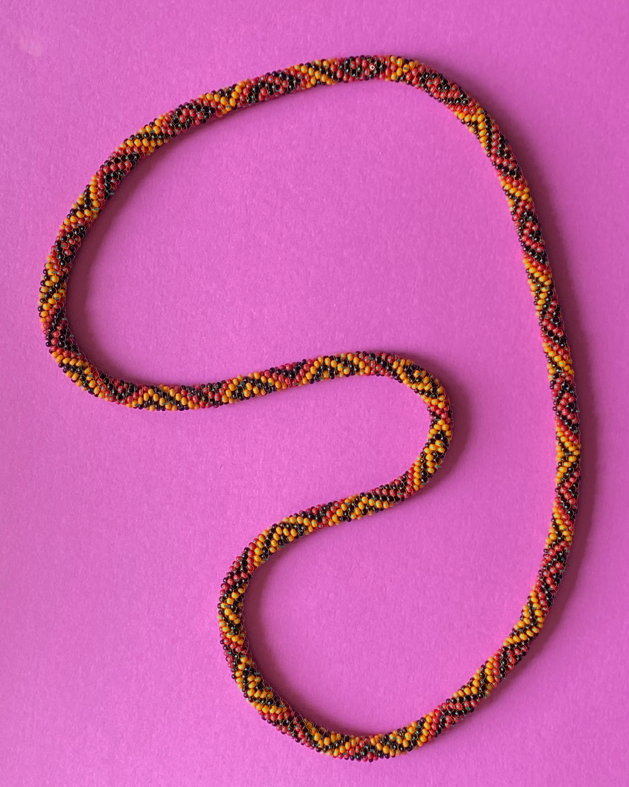
Validation is development selection evidence. Previously revealed R296 reserved cases are retrospective final checks, excluded from this run's optimization; no fresh independent holdout remains. Central/peripheral and low modeled visibility statistics are in each evaluation export.
| Model | Split | Large compatible | Large containment | Patches compatible | Unsupported sites | Min plane gap |
|---|---|---|---|---|---|---|
| 9 | train | 86/363 | 62.1% | 820/1239 | 1608 | 0.00319 |
| 9 | validation | 8/21 | 73.5% | 65/87 | 1608 | 0.00319 |
| 3 | train | 73/363 | 63.1% | 821/1239 | 1699 | 0.00319 |
| 3 | validation | 5/21 | 64.1% | 68/87 | 1699 | 0.00319 |
| 5 | train | 84/363 | 61.2% | 780/1239 | 1983 | 0.01744 |
| 5 | validation | 4/21 | 60.8% | 52/87 | 1983 | 0.01744 |
| 6 | train | 58/363 | 58.0% | 800/1239 | 1979 | 0.01451 |
| 6 | validation | 3/21 | 60.3% | 62/87 | 1979 | 0.01451 |
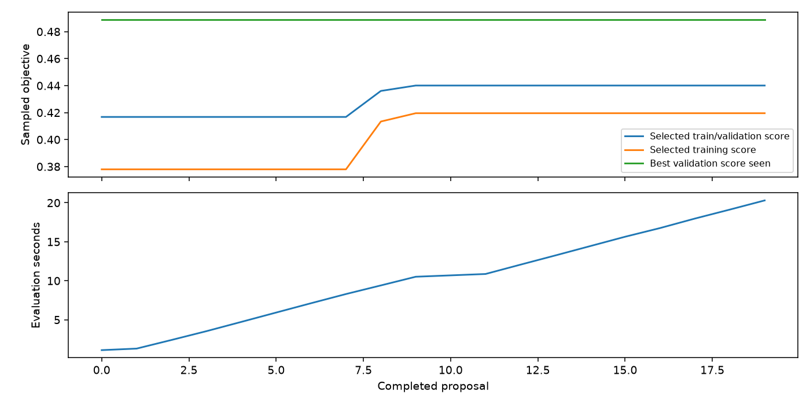
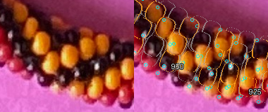
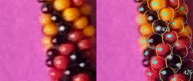
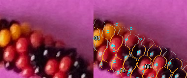
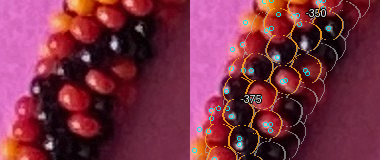
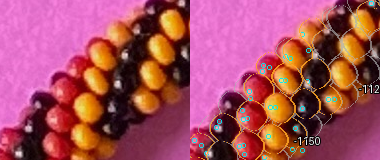
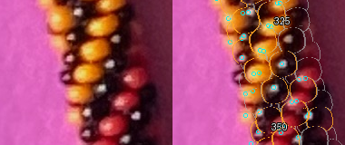
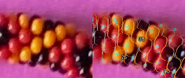
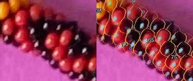
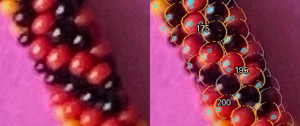